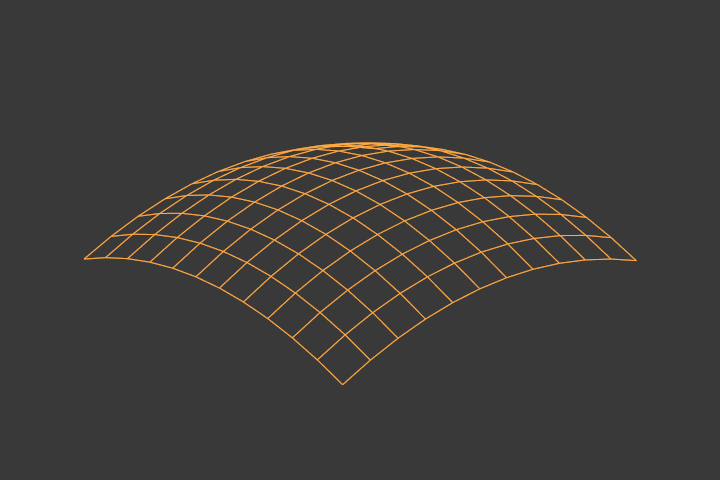
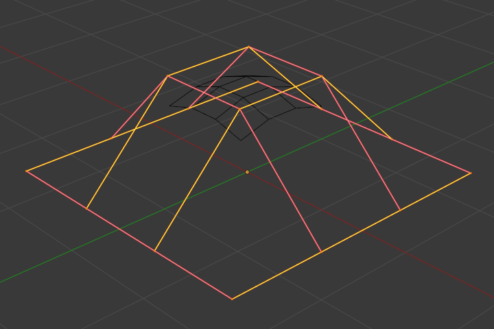

Властивості -- Properties¶

Властивості поверхні.
Панелі вкладки для поверхонь та їх кривих є такі ж самі, як для кривих -- curves, тільки з меншою кількістю опцій...
Форма -- Shape¶
Панель «Форма» -- Shape.
Ви можете коригувати роздільність окремо для передогляду та рендера, щоб не уповільнювати показ в оглядвікні, але все ще мати добрі результати рендера.
- Передогляд -- Preview
- U, V
- Зображ, Рендер -- Render
- U, V
Активний Сплайн -- Active Spline¶
Закриті й відкриті поверхні¶
Як і криві, поверхні можуть бути закритими (зацикленими) або відкритими, незалежно в обох напрямках, що дозволяє вам легко створювати форму труби, бублика або сфери, і вони можуть рисуватися як «тіла» у режимі правки -- Edit Mode. Це робить роботу з поверхнями досить легкою.
Bézier, Endpoint¶
Так само, як і криві НОРБС -- NURBS curves, поверхні НОРБС мають два вузликових вектори, по одному для кожної осі U та V. Тут знову, вони можуть бути за типом як Cyclic, Endpoint чи Bézier з такими ж властивостями, як для кривих. Та як для кривих, ця устава впливає тільки на відкриті поверхні (у відповідному напрямку)...
Кінцева точка по U.
В Ілюстрації Кінцева точка по U. інтерполяційна вісь U позначена як "U", а інтерполяційна вісь V позначена як "V". Інтерполяційна вісь U була установлена як Endpoint і, таким чином, поверхня тепер розширюється до зовнішніх країв з Е1 до Е2 уздовж осі інтерполяції U.
Щоб змусити поверхню розширитися до усіх країв, ви повинні установити для осі V також опцію Endpoint.
Порядок -- Order¶
Ще раз, ця властивість є такою ж, як для кривих НОРБС -- NURBS Curves; вона визначає, скільки керувальних точок враховуються для розрахування кривої форми поверхні. Для вищого Порядку, ніж 1, поверхня відштовхується від керувальних точок створюючи плавнішу поверхню, при цьому припускається, що Resolution є достатньо високою. Для нижчого Порядку, ніж 2, поверхня слідує по керувальних точкам, створюючи поверхню, що грубо наслідує остов ґратки.
Поверхня з Порядком 2 та Порядком 4.
Для цілей ілюстрування для обох поверхонь на Ілюстрації Поверхня з Порядком 2 та Порядком 4. вузликові вектори установлені як Endpoint, що дає розширення поверхні до усіх країв.
Ви можете задавати незалежно порядок для кожної осі інтерполяції, як і для кривих, він не може бути нижчим, ніж 2, та вищим, ніж 6 або кількість керувальних точок на відповідній осі.
Роздільність -- Resolution¶
Як і для кривих НОРБС -- NURBS curves, Resolution керує детальністю поверхні. Чим вища Роздільність, тим більше деталізована та плавніша поверхня. Чим нижча Resolution, тим поверхня грубіша. Однак, тут ви маєте дві устави роздільності, по одній для кожної інтерполяційної осі (U та V). Зауважте, що для кривих ви маєте тільки одну уставу роздільності...

|

|

Роздільність 1×1. |

Роздільність 3×3. |
Ілюстрація Роздільність 1×1. є прикладом роздільності поверхні 1 для обох U та V. Ілюстрація Роздільність 3×3. є прикладом роздільності поверхні 3 для обох U та V.
Згладження -- Smooth¶
Use Smooth Shading.